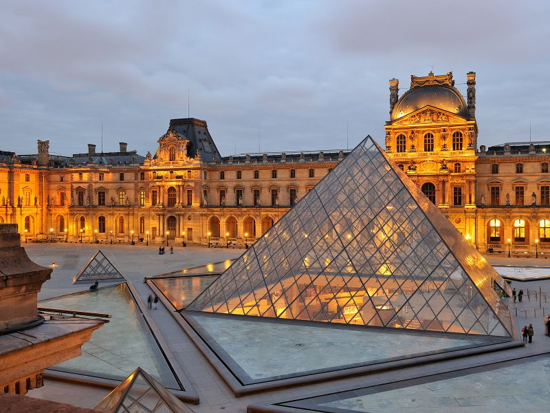
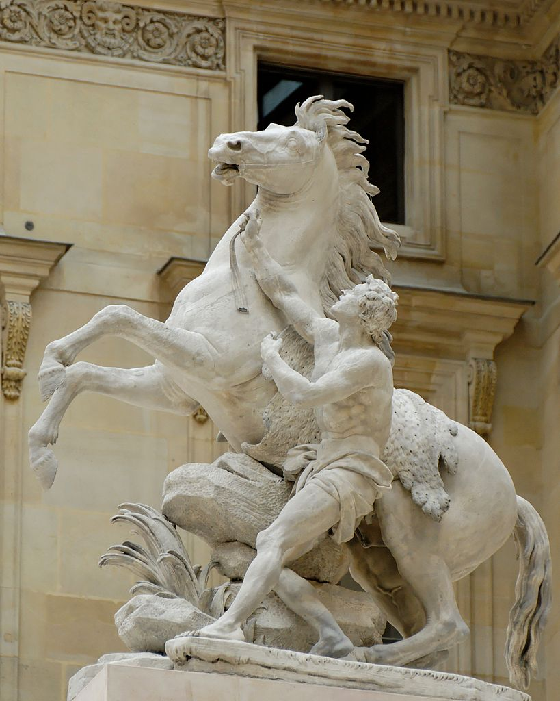
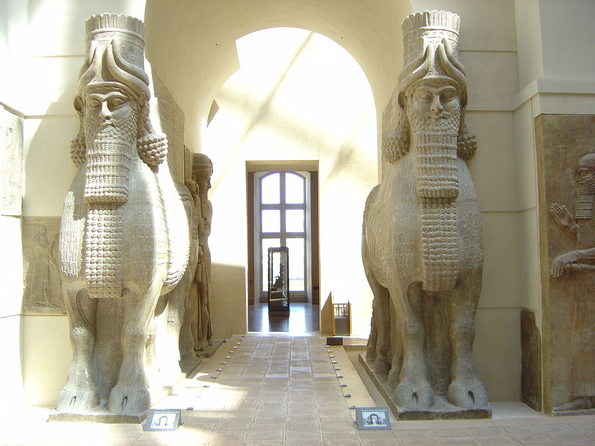
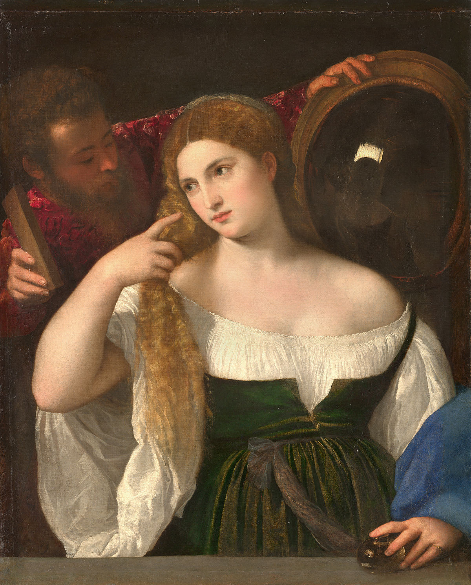
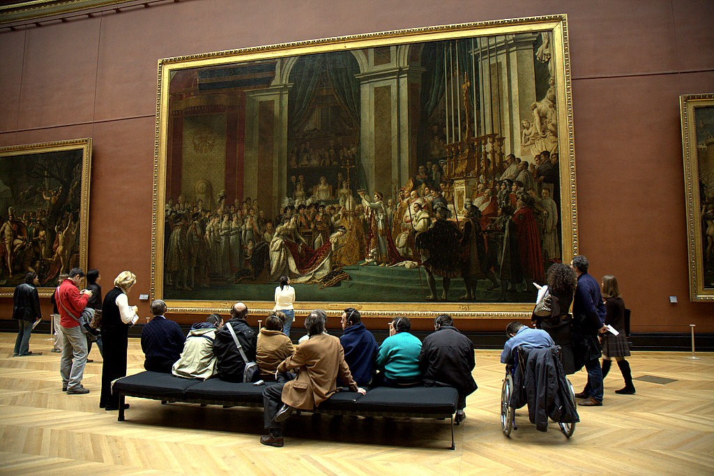
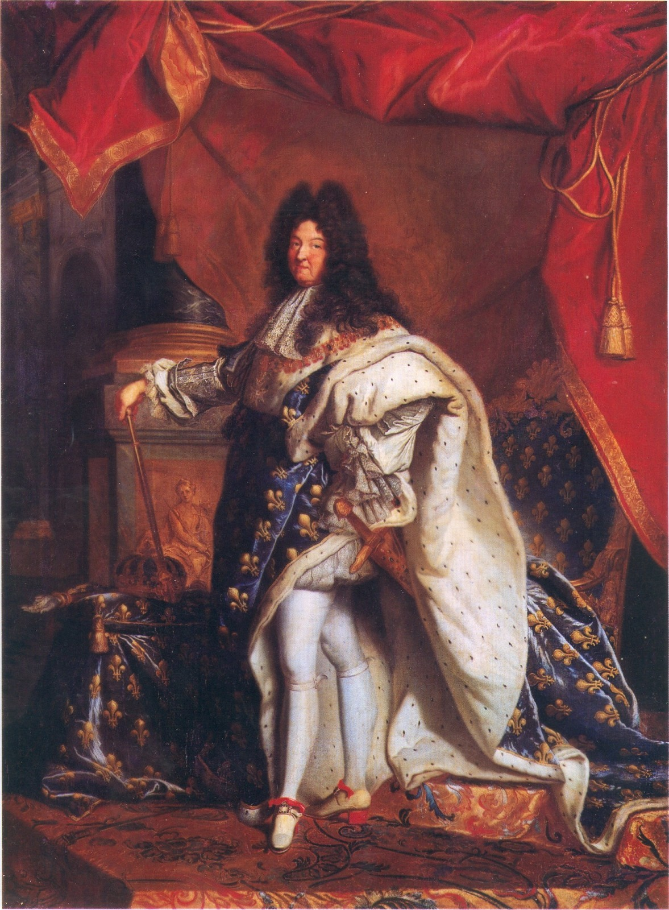
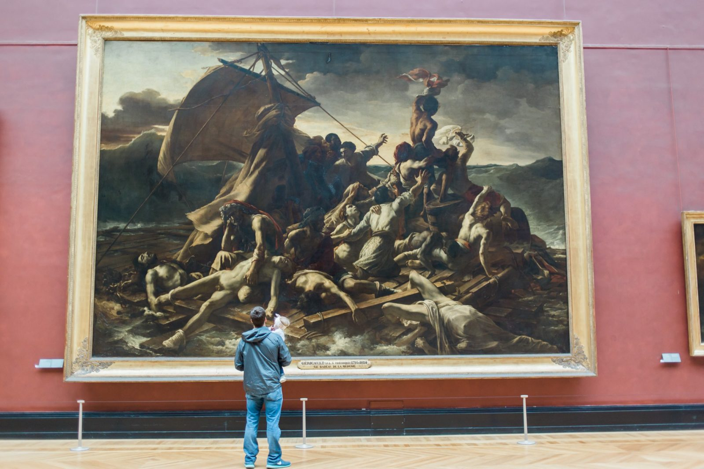

Лувр, Париж

Музей Лувра — один из крупнейших и самый популярный художественный музей мира. Музей расположен в центре Парижа, на правом берегу Сены, на улице Риволи, в 1-м округе столицы.
В 2018 году число посетителей Лувра превысило 10 млн человек, что является рекордом.
Здание музея — старинный королевский дворец (Palais du Louvre). Конная статуя Людовика XIV обозначает точку начала так называемой исторической оси Парижа.
Лувр — один из старейших музеев с богатой историей коллекционирования художественных и исторических реликвий Франции, начиная со времён династии Капетингов и до наших дней.
В Лувре собиралось всё, этот музей можно назвать универсальным. Его коллекции покрывают огромные географические и временные пространства: от западной Европы до Ирана через Грецию, Египет и Ближний Восток; с античности до 1848 года. Европейское искусство новейшего периода времени — с 1848 года и до наших дней — представлено в Музее Орсе и Центре Жоржа Помпиду, а азиатское выставляется в музее Гиме. Искусство Африки, Америки и Океании экспонируется в музее набережной Бранли.
Бюджет музея в 2019 году составил 242,8 млн евро. Из них — 149 млн евро собственных средств (из которых около 98 млн евро пришлось на доходы от продажи билетов) и 93,8 млн евро государственных дотаций.
Галерея

Лошадь Марли

Женщина перед зеркалом

Крылатые ассирийские быки

Коронация Наполеона

Людовик XIV

Плот «Медузы»
Меню
Таблица
Коллекции
| Древний Восток |
Междуречье |
Иран |
Восток Средиземного моря |
| Древние Греция |
Архаическая Греция |
Классическая Греция |
Эллинистическая Греция |
| Древний Египет |
Римский Египет, Коптский Египет; |
тематическая экспозиция |
хронологическая экспозиция |